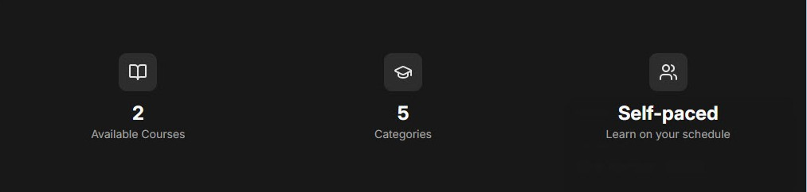

The Cadence home page says there are 5 categories. Nobody typed that 5 into the code.
Follow it from a file on your disk to your screen and you will have visited every part
of this codebase.

The home page at localhost:5173. This lesson is about the 5.
What you will be able to do
Point at a line in app/ and say where it runs: in the browser, on the server, or both.
Say where Cadence keeps its data, and prove it on your own machine.
Why this comes first
The next thing the course asks of you is to have Claude build star ratings, a feature its
author calls "deliberately meaty" because it touches every layer of the app. The first bug
that build runs into is server code that ended up in the browser. You can only catch that
kind of mistake in a diff if you know which code belongs where.
Three places
Cadence is spread across three places. On your machine, all three are on your own laptop.
Browser
The program that shows you the page and reacts to your clicks.
In Cadence: the tab open at localhost:5173.
Server
A program that waits for requests and answers them.
In Cadence: the program that npm run dev starts in your
terminal. It stops when you press Ctrl+C.
Database
Where the data rests, whether or not anything is running.
In Cadence: one file in the root of the repo, data.db.
Only the server opens it.
The first two are a pair. This is how MDN introduces them:
Clients are the typical web user's internet-connected devices […] and web-accessing
software available on those devices (usually a web browser like Firefox or Chrome).
Servers are computers that store webpages, sites, or apps.
"Servers are computers" is true of a live website, where the server is a machine in a data
centre. But server is a role, not a location. While you are developing, both roles are
played by programs on your own laptop.
Many databases are servers in their own right. Cadence uses one called SQLite, which works
differently:
Unlike most other SQL databases, SQLite does not have a separate server process. SQLite
reads and writes directly to ordinary disk files.
So in this repo the database is just a file, and the code that reads it runs inside the
server.
Code runs in two of these places. Data lives in the third.
Follow the 5
Here is everything that happens between pressing Enter on
localhost:5173 and seeing the 5. Every excerpt is real code from your repo,
with its line numbers.
Browser 1. You ask for the page
You type localhost:5173 and press Enter. The browser knows
nothing about Cadence yet. It sends a request to the server:
please give me the page at /.
Server 2. The server looks up the address
app/routes.ts
8export default [
9 index("routes/home.tsx"),
This file is the route table: the list of every address Cadence
answers to, each paired with the file that handles it. index means the
bare address /. So this request belongs to
app/routes/home.tsx.
React Router's docs put it this way: each route has "a URL pattern to match the URL,
and a file path to the route module that defines its behavior"
(Routing). A route module is their name for a
route file such as home.tsx.
A loader is a function that fetches what a page needs before the
page is drawn. React Router finds it by its exact name, loader. Its docs
say loaders "are only called on the server when server rendering"
(Route Module), and Cadence is server rendered. Line 29 asks
for the categories.
Server 4. A service queries the database
app/services/categoryService.ts
16export function getAllCategories() {
17 return db.select().from(categories).orderBy(categories.name).all();
18}
getAllCategories lives in a service: a file of
functions that talk to the database so that pages don't have to. Read line 17 aloud:
select from the categories table, ordered by name, all of them.
db is the server's open connection to data.db.
Database 5. The database hands back five rows
The categories table inside your data.db
id
name
slug
1
Programming
programming
2
Design
design
3
Data Science
data-science
4
DevOps
devops
5
Marketing
marketing
A database keeps its data in tables. Each row of
this one is a category. There are five rows, so the loader gets back a list of five
items. This is where the 5 comes from. It is a count of rows, not a number
anyone wrote down. To see this table yourself, run
npx drizzle-kit studio.
The loader returns categories.length, which is 5. React Router then calls
Home, the component: the function that describes what
the page looks like. It hands Home the loader's result as
loaderData, and line 142 drops the number into the page. Out comes
finished HTML containing <p class="text-2xl font-bold">5</p>.
That HTML is the response.
Browser 7. The browser shows it, then wakes it up
The HTML appears at once. Then the browser downloads Cadence's JavaScript and runs
Home a second time, here in the browser, to attach the click handlers
(the dark-mode button, for one). That second run is called
hydration. In React's words, it "turns the initial HTML snapshot
from the server into a fully interactive app that runs in the browser"
(hydrateRoot).
The loader is not in that download: "the loader function is removed from
client bundles so you can use server only APIs without worrying about them being
included in the browser" (Data Loading).
One page load, start to finish. Step through it, then choose "Show all steps" to see the
whole journey at once.
What to take from the journey:
What
Where it runs
How to see it
The loader function inside a route file
Server only
Ctrl+Shift+F, search export async function loader
The component function inside a route file
Server first, then
Browser
Ctrl+Shift+F, search export default function
The service files in app/services/, plus app/db/index.ts
Server only
Ctrl+P, type services/ or db/index.ts
The database file, data.db (data, not code)
Database Only the server opens it.
Run npx drizzle-kit studio in the course repo, open the URL it prints
Notice that home.tsx holds both a server-only function and a function that
runs in both places. Nothing in the syntax marks the split. Only the name
loader does. The fuller table is on the
reference sheet.
Prove it
Reading is not learning. This takes about ten minutes. You need the app running
(npm run dev in the course repo) and the home page open in your browser.
See what the server sent.
On the home page press Ctrl+U to view the page source, then
Ctrl+F and search for >5<. You should land on
<p class="text-2xl font-bold">5</p>. That is the HTML from
step 6, with the 5 already in it before any JavaScript ran in your browser.
Make both places talk.
Open app/routes/home.tsx and add the two highlighted lines: one as the
first line of loader, one as the first line of Home. Save.
There are two places a console.log can show up: the terminal where
npm run dev is running, and the browser's console (press
F12, then choose the Console tab). Decide which message you expect in
which place. Then reload the page and look.
I have predicted and looked. Show me what should have happened.
Terminal:LOADER RAN, then
COMPONENT RAN. Browser console:COMPONENT RAN only.
LOADER RAN never appears there.
The loader ran in one place. The component ran in two. In the browser you will see
COMPONENT RAN several times (six, when I tested this on a copy of your
repo). One reason is deliberate: in development, React makes
components "re-render an extra time to find bugs caused by impure rendering"
(StrictMode). The count does not matter today. The place
does.
Change the data without touching the code.
In the DevUI panel at the bottom right of the page, use Switch user to become
Alex Rivera, the admin. Go to localhost:5173/admin/categories,
click Add Category, type Testing and press Enter.
Before you go back to the home page: what will it say, and which file did you just
change?
I have predicted and looked. Show me what should have happened.
The home page says 6 Categories, and you changed no code at all.
Run git status in the course repo: the only change it lists is
app/routes/home.tsx, from your two console.log lines.
The new category is a new row in the database, and data.db is
deliberately left out of git.
Now delete it again: on the Testing row, click the bin icon. Be careful,
because it deletes at once without asking. The home page is back to 5.
Put everything back.
In the course repo run git restore app/routes/home.tsx to remove your two
lines, and switch back to your usual user in DevUI. If you deleted the wrong category,
add it again by name. If the data ever gets into a real muddle,
npm run db:seed rebuilds all of it from scratch.
Check yourself
Five questions. Answer from memory without scrolling up: the effort of recalling is what
makes it stick. Your first answer to each is the one that counts.
app/routes/courses.tsx also exports a loader. You put
console.log("hi") inside it and open /courses. Where does
hi appear?
In the terminal only
In the browser only
In both, every time
Any function exported under the name loader runs on the server, whichever
route file it sits in. What the server prints goes to the terminal.
A colleague adds two categories through the admin page, and the home page now says 7
Categories. Which file changed on disk?
The page, home.tsx
The schema, schema.ts
The database, data.db
Categories are rows in the database. home.tsx never mentions a number: it
counts whatever rows come back. schema.ts is a file you have not met yet.
It describes the shape of each table, not its contents.
You load the home page fresh. Where does the Home function run?
On the server only
On both, server first
In the browser only
The server runs Home to build the HTML. The browser runs it again to
hydrate the page. That is why COMPONENT RAN showed up in both consoles.
You press Ctrl+C in the terminal that is running
npm run dev, then reload the Cadence tab. What happens?
The page loads as before
The page fails to load
The page loads without data
The server is that program. With it stopped, nobody answers the request.
data.db is untouched, though: the data rests in the file, ready for the
next time the server starts.
Claude adds the line const categories = getAllCategories(); at the top
of the Home component. Why is that a mistake?
Home only runs on the server, which cannot call services
Home runs before the loader, so the table looks empty
Home also runs in the browser, which cannot open data.db
A component runs in the browser as well as on the server, and the browser has no way
to open data.db. Database code belongs in the loader, which never leaves
the server. This is the kind of mistake the course's star-ratings build runs into.
Go to the source
MDN, Introduction to the server side (15 to
20 minutes). The clearest plain-language account I found of what runs in a browser, what
runs on a server, and why websites keep their data in a database. It is not about React
or Cadence, and that is the point: these three places exist in every web app.
Then, for the Cadence half, read just the loader paragraph of React
Router's Route Module page.
Ask your teacher
I am your teacher for this, and I am one message away. Back in Claude Code, in this
workspace, paste your quiz result and ask anything that is still fuzzy. For example:
Why does the component have to run twice?What else is inside
data.db?What does { request }: Route.LoaderArgs
mean? A question asked now saves a week of guessing.
The Cadence code itself, on the main branch at commit 90e09a1:
app/routes.ts, app/routes/home.tsx,
app/services/categoryService.ts. Every excerpt and line number was checked
against those files.
My own test, 6 November 2026. I ran the "Prove it" steps on a throwaway copy of your
repo: the terminal and browser console output, the page source, and the change from 5 to
6 and back are what that copy actually did.
The AI Coding Crash Course, "Build a Feature" and its solution, in your course repo's
lessons/04-fundamentals/ folder.